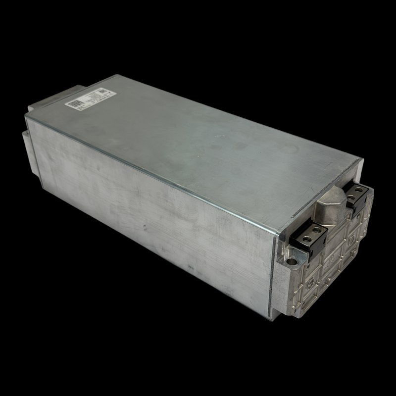

Photo01
Photograph and reconstruct
Each component is photographed from several viewpoints on a white background during the teardown. Every reconstruction uses one photo; the candidate that best matches the real part is kept. One physical measurement sets its metric scale; further measurements only check it.